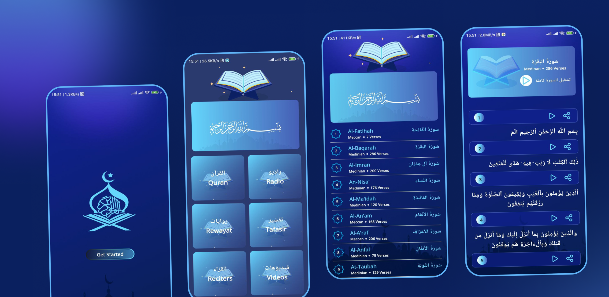
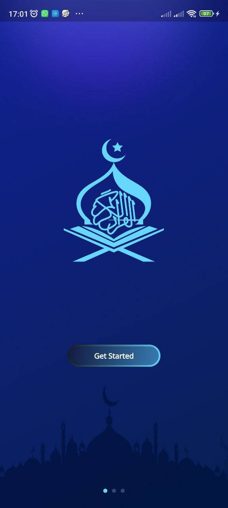
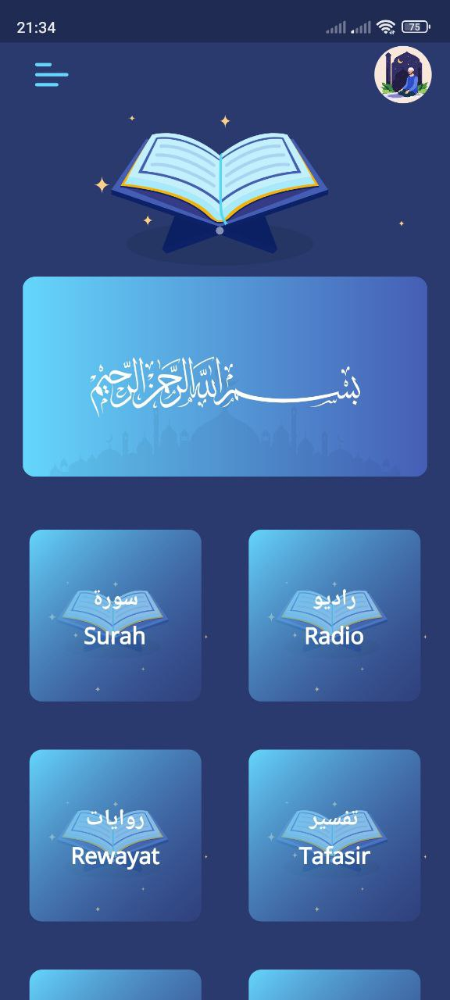
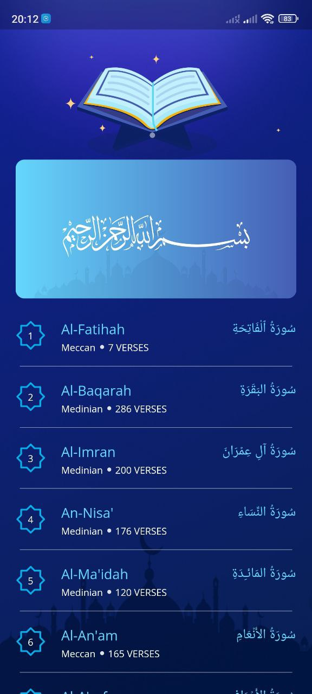
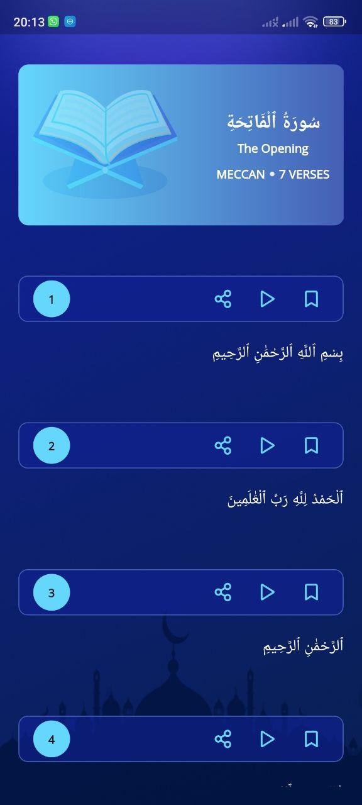
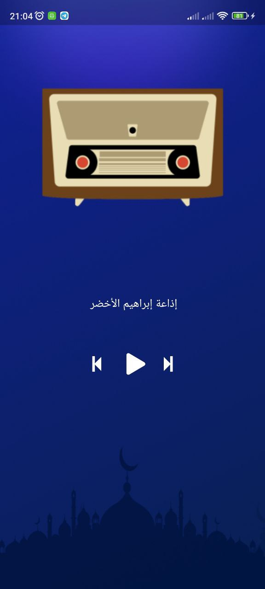
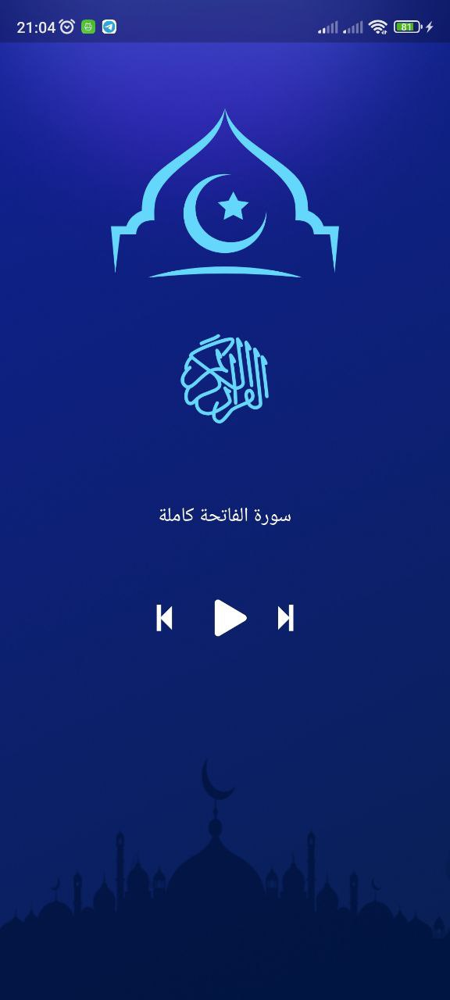
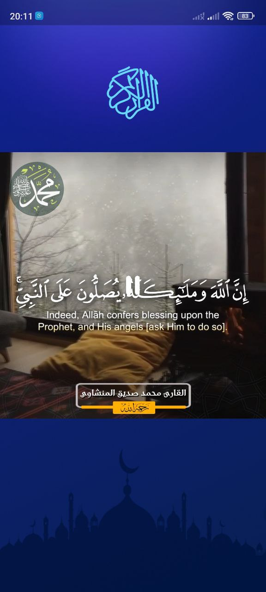

Quran Kareem
Quran Kareem (moshaf_app) is an Arabic-first Flutter application for Android and iOS that bundles a complete Quran reader with a set of Islamic audio and video libraries. Users can read the full mushaf surah by surah, play individual verses or a whole surah recited by Mishary Alafasy, stream live Quran radio stations, browse audio tafsir, explore a directory of reciters and their available riwayat, and watch curated video content. It targets Arabic-speaking Muslim users who want reading, listening, and study material in one offline-aware, RTL-native app.
What the app does
Lists all surahs from the mushaf index and opens a verse-by-verse reading view with Arabic text, revelation type, and verse count.
Plays the audio for any individual ayah or streams an entire surah recited by Mishary Alafasy through a dedicated audio player.
Streams Quran radio stations from the mp3quran API with play/pause and previous/next station controls.
Browses tafsir recordings surah by surah with its own transport controls for playback and navigation.
Lists available reciters and drills into each reciter's individual mushaf recordings.
Displays the different narrations (riwayat) of the Quran available through the mp3quran catalogue.
Plays Islamic video content inline with custom playback controls.
Shares any ayah's Arabic text together with a direct link to its recitation audio via the native share sheet.
Watches the device connection and swaps the whole app shell to an offline state the moment the network drops.
Compares the installed build against a version published remotely and prompts the user when an update exists.
How it's built
The app uses a feature-per-screen layout — Home, Layout, Onboarding, Moshaf/Ayat reading, Radio, Tafasir, Reciters, Riwayat, Video — each with its own widget subfolder, alongside separate layers for JSON models, cross-cutting shared components, and core helpers.
State management is Bloc's Cubit layer via flutter_bloc — no events, no HydratedBloc, no Provider. Two cubits carry the app: an InternetCubit, provided once at the root, which listens to the connectivity stream and emits an initial/gained/lost state; and a MainCubit, which owns every data fetch and both audio players. MainCubit is deliberately not global — each home-screen tile constructs a fresh instance, kicks off its fetch, and injects it scoped into the destination route, so a screen's data and playback state die with the screen.
Networking goes through a static Dio wrapper configured once at startup against the mp3quran API, with the full Quran text and per-ayah audio coming from a second source (alquran.cloud).
See it in action








Real engineering challenges
The radio screen and the tafsir screen each owned a separate audio player instance, so starting one while the other was already streaming produced two recitations playing over each other, and leaving a screen left its stream running in the background. The fix restructured both toggle paths so each one explicitly stops the opposite player before starting its own, added proper dispose handling so leaving a screen actually stops playback, and fixed a genuine copy-paste bug where the radio play button was wired to the tafsir player's play function instead of its own.
The project originally depended on a third-party upgrader package, later removed as unused. The replacement is a hand-rolled check built on Firebase Remote Config that compares the installed version against a remotely published one and notifies the user. Getting it stable took several follow-up fixes: the version comparison originally threw on non-numeric segments and was made to fail gracefully instead, the config fetch was wrapped so a failed check can't block app start, and the update check was moved to run after the first frame instead of before it.